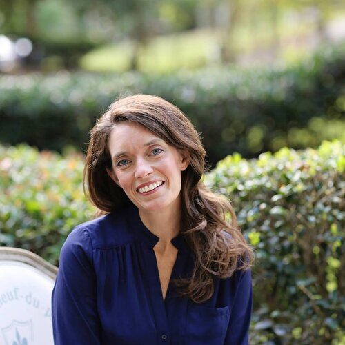
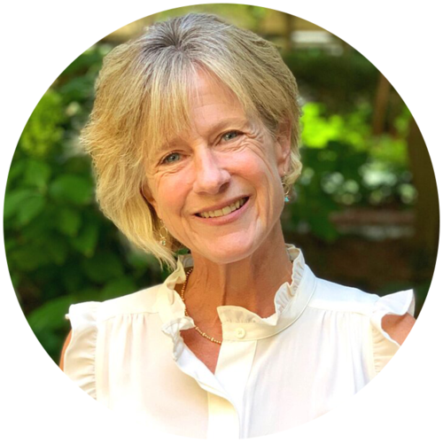

Mazi Robinson, MS, LPC, CPCS, NCC, CDWF, Founder/Director Mazi is a Licensed Professional Counselor (LPC006005) in Atlanta specializing in helping women discover their true voice as they navigate self worth/self esteem challenges, relationship concerns, and life stage transitions. Mazi also specializes in working with codependency and boundaries, midlife transition concerns, and female leaders/working professionals.
Sarah Collins, MS, MDiv, LPC, NCC Sarah is a Licensed Professional Counselor (LPC012015) specializing in working with women on identity formation and development, building healthy relationships with others and self, life stage transitions, spiritual concerns, and grief and loss.
Becca Hamilton, MA, APC, NCC Becca is an Associate Professional Counselor (APC007140) specializing in working with couples and women on concerns including life transitions such as young adulthood and motherhood, identity development, anxiety, codependency, depression, betrayal and abuse, divorce care, and spirituality. In working with couples, Becca specializes in marriage enrichment, helping couples develop healthy communication skills, and affair recovery. As a Certified Prepare: Enrich facilitator, she enjoys working with pre-marital couples as they lay the groundwork for their future marriage and family.

JoJo Howell, MA, M.T.S., LPC JoJo is a Licensed Professional Counselor (LPC013455) specializing in working with anxiety, self esteem, relationship challenges, young adulthood transition, divorce recovery, grief/loss, depression. She desires to offer clients a “safe container” where they can show up as their authentic selves while they explore difficult feelings related to such topics as family of origin, self concept, and identity.
Amelia Thomas, MS, LPC, NCC Amelia Thomas is an Licensed Professional Counselor (LPC013793) and EMDR Trained Clinician specializing in working with women on trauma recovery, anxiety, self-esteem, identity development, life transitions, and relationship concerns. Amelia is inspired by helping women recognize their worthiness through the healing of past wounds and the strengthening of their authentic voices.
Emily Giattina, LCSW Emily is a Licensed Clinical Social Worker (CSW005867) specializing in working with womxn across the lifespan on concerns related to identity development, relationship challenges, recovery from substance use disorders, shame resilience, perfectionism, high demand jobs, relational trauma/vicarious trauma, and life transitions— career changes, breakups/divorce, changing family/work demands. Emily also has experience working with parents/partners as they navigate the recovery process of an adult child/partner who has a substance use disorder or mental health concern. Additionally, Emily works with individuals who are grieving the loss of a loved one from suicide and/or unintentional drug overdose.
Nicole Casey, MAMFT, LPC, NCC Nicole is a Licensed Professional Counselor (LPC013441) specializing in working with anxiety of all kinds, mood disorders, perfectionism, rumination, spiritual concerns, and life transitions. Nicole also has experience supporting individuals or families impacted by substance misuse, divorce, grief and loss, aging, work stress, and obsessive/compulsive behaviors. Nicole is honored to empower clients to reclaim a sense of worthiness, self-compassion, and peace in their lives. Nicole works with adult women across the lifespan.
Angie Hohulin, Master’s Level Intern Angie is a Master’s Level Intern and pre-licensed professional specializing in grief, relationship issues, life transitions, spiritual questions, burnout, anxiety, shame, or stress at work or home. She also works with perfectionism, negative thinking, self-doubt, singleness, emotional and relational wounding, forgiveness, and discovering your purpose. Additionally, Angie has experience incorporating faith and spirituality into the counseling process.